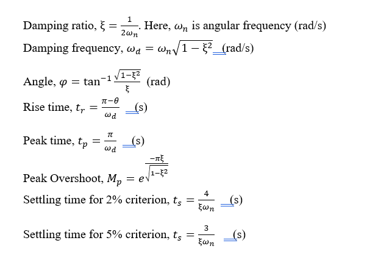

In control engineering analysis, energy storage devices like inductors and capacitors are used in the system. The presence of such elements may lead to a change in the state of voltages and currents with respect to time. This change of state of voltage or current between the steady states is termed a transient response. Also, the time taken for this changeover is called transient time.
Generally, transient responses are oscillatory in nature i.e., either it may be sustained or decayed. The actual characteristics of the system highly rely on parameters (L and C) present. The representation of a system using a linear differential equation as a function of time period along with its solution and analysis is defined as time domain specifications. The list of time domain specifications is as given below.
Transient response and its analysis in any system is essential to have the knowledge of parameters values. This may help to design a proper controller for maintaining the parameters within the specified acceptable range.
The control system's time response is subdivided into two categories: transient and steady state. The term "response analysis" refers to examining at how output changes over time. The system's output requires a finite amount of time to attain its final value. The tendency of any system to resist the oscillatory behaviour of the system is known as damping. The damping of a system is quantified by a factor known as the damping ratio. There will be no oscillations in the output if the damping is very high. The result is totally exponential in nature for an over damped system. The system is considered a critically damped system if the damping is smaller than in an over damped scenario. Hence the response of a control system provides a detailed description of how the system operates in both transient and steady states. As a result, a time analysis of both phases is necessary. There are certain time parameters that can be used to assess the transient response, such as Delay Time, Rise Time, Peak Time, Settling Time, Maximum Overshoot, and so on.
